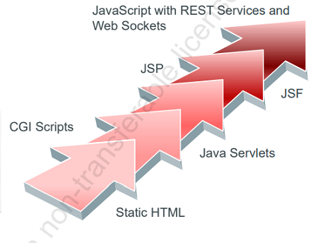

| Referencia | Descripcion | Ejemplo |
|---|---|---|
| framework FrontEnd |
hay tres Frameworks o librerias o marcos de trabajo (populares) en el frontEnd 1. Angular: google 2. React: facebook 3. Vue-Js: Por deiversas compañias . |
|
| framework BackEnd con Java |
Frameworks o librerias o marcos de trabajo (Segun aparicion cronologica) en el BackEnd 1. html static 2. CGI scripts 3. Java Servlet 4. Java Server Page JSP 5. Java Server Faces JSF |
 |
| Principales Framewoks |
1. React.js [Frontend + JavaScript] 2. Spring Boot [Backend + Java] 3. Angular [Frontend + JavaScript] 4. Node.js [Backend + JavaScript] 5. Django [Frontend + Backend + Python] 6. Frasco [Backend + Python] 7. Bootstrap [Frontend + CSS] 8. jQuery [Frontend + JavaScript] 9. Ruby on Rails [Backend + Ruby] 10. GraphQL [Backend + JavaScript] |
|
| Consideraciones | ||